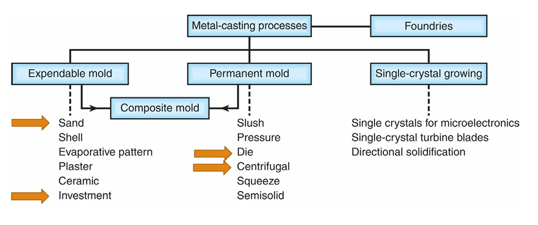
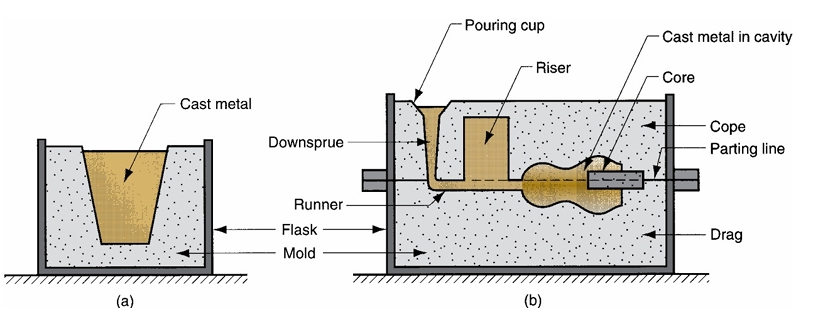
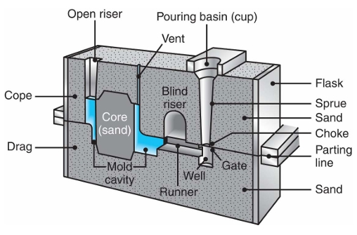
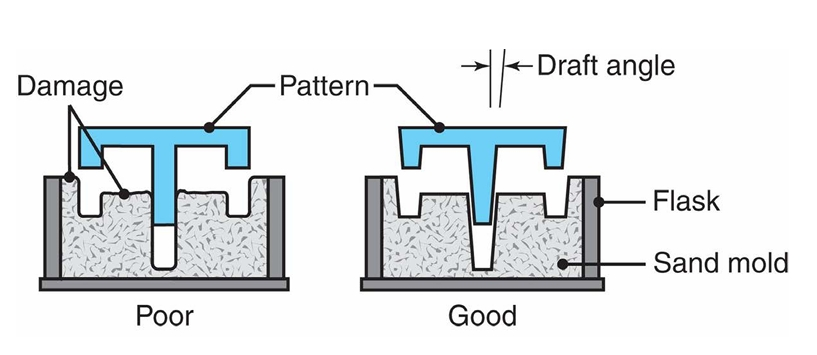
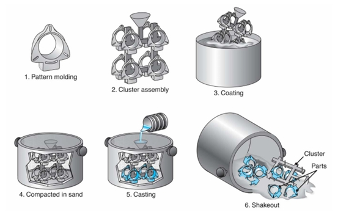
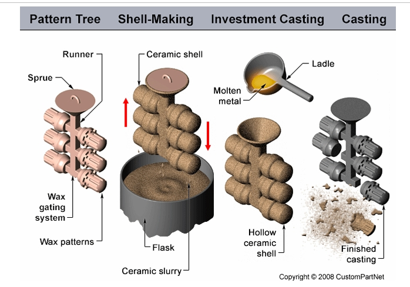
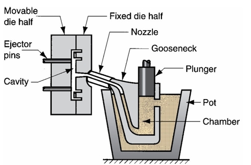
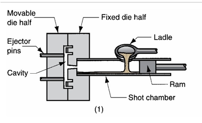
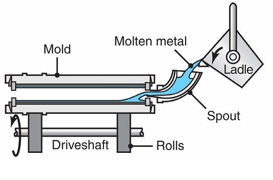
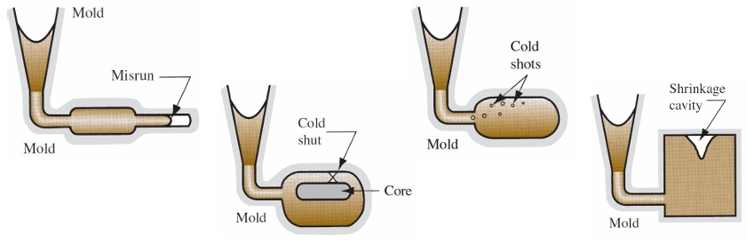

1. What is Casting?
Casting is a manufacturing process where molten metal is poured into a mold, allowed to solidify, then removed to produce a finished part. It can produce complex shapes — including internal cavities — in almost any metal, from millimetres to metres in size.
General Process Steps
- 1. Pattern / mold making
- 2. Melt preparation
- 3. Mold filling
- 4. Cooling & solidification
- 5. Removal (breakout) & finishing


2. Sand Casting
The most widely used casting process — molten metal is poured into a sand mold. Suitable for almost any metal and any size, but gives lower accuracy and rougher surface finish.
Mold Composition (Memorise!)
- 90% sand · 7% clay · 3% water
Key Gating System Components
- Sprue — vertical entry channel for molten metal
- Runner — horizontal path distributing metal to gates
- Gate — entry point directly into the cavity
- Vent — channels for gases to escape
- Riser — reservoir to feed metal & compensate shrinkage
- Core — inserted shape to create internal cavities
- Filter — removes impurities from metal flow


Design Guidelines
- Avoid sharp corners — use fillets/radii
- Add draft angles for easy removal from mold
- Choose a good parting line (prefer flat surface)
- Keep part in the drag (lower mold half)
- Avoid trapped sand — add exit paths for air and material
- Add an extra outlet to ensure full filling (cut later)
Characteristics
- Lower accuracy & rougher surface than other processes
- Can make very large parts (any metal)
- Highly automatable — BMW plants use robots for pouring, finishing, inspection with only 2–3 human operators
⚠️ Safety Hazards
- Extreme temperatures · Molten metal splash · Toxic fumes · Dust inhalation · Explosion risk from moisture!
3. Lost Foam Casting
A polystyrene foam pattern is coated and embedded in sand. When molten metal is poured, the foam evaporates and is replaced by metal — no parting line results.
Process Steps
- Create foam pattern → coat with refractory → embed in sand → pour metal → foam evaporates → metal fills space → remove & finish

Advantages
- ✔ No parting line
- ✔ Minimal finishing needed
- ✔ Good for complex geometries
Disadvantages
- New pattern required every time
- Environmental concerns (foam vapours)
- Cost depends on pattern complexity
4. Investment Casting (Lost Wax)
Produces the highest accuracy and best surface finish of all casting processes. Used for jet engine blades, aerospace components, jewelry, and high-temperature metals.
Process Steps (Very Important)
- 1. Inject wax into a die to create the pattern
- 2. Assemble multiple wax patterns onto a central "tree"
- 3. Apply ~7 ceramic layers to build the shell
- 4. Autoclave: melt/burn out the wax
- 5. Pour molten metal into the preheated ceramic shell
- 6. Break the ceramic shell after solidification
- 7. Cut parts from tree, finish & inspect

Advantages
- ✔ Very high dimensional accuracy
- ✔ Excellent surface finish (no machining needed)
- ✔ Complex shapes possible
- ✔ Works for high-temperature metals (titanium, superalloys)
Disadvantages
- Expensive · Many process steps · Labor intensive (robots increasingly used)
Applications
- Jewelry · Jet engine turbine blades · Aerospace structures · Medical implants
5. Die Casting
Molten metal is injected under high pressure (10–200 MPa) into a permanent steel mold (die). Ideal for mass production of small-to-medium parts with excellent surface finish and dimensional accuracy.
Hot Chamber vs Cold Chamber
| Hot Chamber | Cold Chamber | |
|---|---|---|
| Plunger location | Submerged in molten metal | External — filled separately |
| Speed | Faster cycle times | Slower |
| Suitable metals | Zinc, lead, tin (low melting) | Aluminum, magnesium, copper |
| Key reason for cold chamber | — | Aluminum is corrosive to the plunger mechanism |


Advantages
- ✔ Very high production rate · Good surface finish · High accuracy · Thin walls possible
Disadvantages
- High initial machine and tooling cost · Limited part size · Limited to lower-melting metals
Classic Example
- Matchbox/Hot Wheels toy cars — 200,000+ units at speed with excellent finish and thin walls
6. Centrifugal Casting
The mold rotates as metal is poured. Centrifugal force pushes metal to the outer walls, creating hollow cylindrical parts with no cores needed.
Used For
- Pipes · Bearings · Cylinders · Gun barrels · Pressure vessels

Key Concept
- Density is highest at the outer wall (centrifugal force)
- Impurities and inclusions migrate toward the inner surface (can be machined away)
Advantages
- ✔ No cores needed · Strong outer surface · Uniform wall thickness
7. Casting Defects
1. Shrinkage
Metal contracts ~0.8–3% during solidification, forming internal cavities. Solution: use risers to supply extra metal.
2. Porosity
Voids caused by trapped gas or shrinkage. Weakens the part significantly. Solution: improve venting, reduce turbulence, add riser.
3. Misrun
Metal solidifies before filling the entire mold. Cause: temperature too low / pressure too low / sections too thin.
4. Cold Shut
Two separate metal streams meet but don't fuse — leaves a visible seam/crack defect.
5. Turbulence Effects
- Gas absorption · Oxidation · Mold wall erosion
- ⚠️ Always design for laminar (smooth) flow — turbulence causes defects

8. Key Theory Concepts
Laminar vs Turbulent Flow
- ✔ Laminar — smooth, continuous flow → prevents gas entrapment and erosion
- ✗ Turbulent — chaotic flow → gas absorption, oxidation, mold erosion, defects
Chvorinov's Rule
→ Larger/thicker sections cool SLOWER and solidify LAST
→ Design risers to be the LAST part to solidify
Grain Size & Strength
- Faster cooling → smaller grains → stronger material
- Die casting (metal die, rapid cooling) → stronger than sand casting (slow sand cooling)
9. Process Selection — Golden Rules
| Requirement | Best Process |
|---|---|
| Low quantity (1–10 parts) | Sand casting / 3D printing |
| Medium quantity (10–1000) | Sand casting |
| High quantity (1000+) | Die casting |
| Highest precision & finish | Investment casting |
| Cylindrical / hollow parts | Centrifugal casting |
| No parting line required | Lost foam casting |
| Lowest tooling cost | Sand casting |
| High-temperature metals (Ti) | Investment casting |
| Zinc (fast, low melting) | Hot chamber die casting |
| Aluminum | Cold chamber die casting |
Full Process Comparison
| Process | Production Rate | Quality/Finish | Cost | Best Application |
|---|---|---|---|---|
| Sand casting | Medium | Low | Low | Large parts, any metal |
| Investment casting | Low | Very High | High | Precision, aerospace |
| Die casting | High | High | High initial | Mass production |
| Centrifugal casting | Medium | Medium | Medium | Pipes, cylinders |
| Lost foam casting | Low–Medium | Medium | Medium | Complex, no parting line |